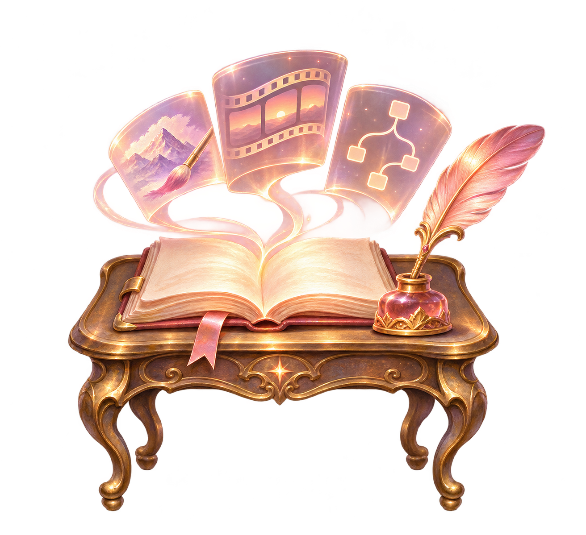

In progress
Creator Studio
Shape an idea as a story, a film or an interactive experience.
Bring cartoons, animation, film and interactive stories into one creative workspace. Different forms can develop the same ideas while keeping their sources and uncertainty visible. This is an introduction to the work in development; the complete studio experience is still taking shape.
Inspect sources & shared capabilities →